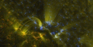

The composite image shows strong magnetic fields in blue and yellow (indicating opposite polarity) and has an extreme ultraviolet image superimposed over it.
In the image below, notice how the arcs observed in ultraviolet come directly from the areas of magnetic polarity.
